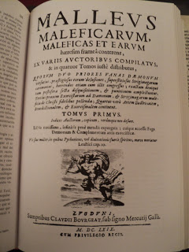
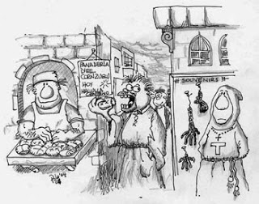

Cuando los demonios no existen
Se acerca otro Halloween y entre decoraciones de calabazas, arañas y murciélagos se pueden oír algunas voces que satanizan, literalmente, esta celebración. Muchos fundamentalistas cristianos alegan que detrás de Halloween está el mismo Satanás y han hecho curiosas campañas para que los niños no participen en esta fecha. Por ejemplo, el pastor evangélico Dawlin Ureña, famoso por sus “curiosas” declaraciones en internet afirmó:
“En realidad la celebración llamada Halloween es el día más satánico en el calendario pagano. Ningún cristiano debe participar en la celebración de las actividades llevadas a cabo ese día. […] Durante la celebración de Halloween, los niños se visten de brujas, duendes, fantasmas, pequeños demonios, y adivinos. Todos estos son representantes del reino de las tinieblas”.
Las brujas, fantasmas y demonios existen en las mentes nubladas en lugar de la realidad. A medida que la ciencia ha avanzado hemos podido comprender que estos seres que tanto asustan a algunos creyentes son tan solo seres imaginarios.
¿Qué tienen en común una lombriz solitaria, un hongo del centeno y el virus de la rabia con las presuntas posesiones demoníacas, las brujas y los vampiros? Al parecer nada. Pero nuevamente encontramos que en el desconocimiento del mundo natural se encuentra una de las razones de porque se cree en lo sobrenatural.
En 1692, en la ciudad de Salem, Massachusetts, un grupo de niñas comenzaron a comportarse de manera extraña. Lloraban, se quejaban de dolores extraños y andaban a cuatro patas. Una de ellas mencionó que estaba bajo el hechizo de una bruja. Tras un interrogatorio se acusó a una esclava de la isla de Barbados. Era fácil para los blancos cristianos afirmar que las prácticas culturales y religiosas de las personas esclavizadas desde África eran demoniacas (¡Lástima que no opinaron lo mismo de la esclavitud!). Luego acusaron a una señora que no era querida por la comunidad y a una prostituta. Lo que vino después fueron ahorcamientos y quemas por ser brujos o brujas. En su momento culminante 200 personas terminaron pagando con sus vidas al ser acusados de brujería.

Centeno con cornezuelo
Pero a pesar de todas las ejecuciones nunca hubo una bruja. La respuesta a los extraños síntomas se pueden encontrar en el hongo Claviceps purpurea que afecta al centeno. El centeno era parte importante de la alimentación de los habitantes de Salem y este hongo microscópico genera toxinas que afectan al sistema nervioso. Una de las toxinas es la ergotamina, que provoca alucinaciones, visiones, insensibilidad cutánea y alteración de las extremidades del cuerpo. La ergina y la ergonovina son similares al ácido lisérgico (LSD) y actúan como alucinógenos. Otro tóxico es la cerealina que provoca cambios en los ciclos reproductores y trae como consecuencia abortos. Los abortos espontáneos fueron considerados obra del demonio por personas como el mismo papa Inocencio VIII. La enfermedad que estaba detrás de los síntomas que se adjudicaban a la brujería hoy se conoce como ergotismo.
Mucho antes, en 1486 apareció el libro “Malleus maleficarum” escrito por dominicos. El libro fue adquirido por el Santo Oficio en su pía labor de eliminar la brujería del mundo cristiano. En este libro se dan como ciertos los relatos de que las brujas vuelan en escobas, se comen a los niños pequeños, causan tormentas de granizo y echan a perder las cosechas. ¿Cómo podría de otra manera llegar una plaga a un cultivo o caer una granizada, a no ser por la brujería?
Los juicios por brujería eran todo menos justos. Tan solo una acusación bastaba para que alguien fuera procesado. Si la persona no confesaba se consideraba que el diablo estaba muy aferrado a ella. Pero la inquisición encontró en la tortura la herramienta para lograr la confesión. Cuando por la desesperación la acusada confesaba, debía luego incriminar a otra persona. Así se iniciaron cacerías de brujas que no fueron más que asesinatos fomentados por la ignorancia, el fanatismo y la envidia de vecinos celosos.
La Iglesia Católica tiene gran culpa de estas masacres por haber creado la Inquisición y haber mantenido estas supersticiones, al extender creencias irracionales en demonios, espíritus y en el diablo (¡Y mantiene aún sacerdotes exorcistas!). Fue el papa Inocencio VIII quien en una bula de 1484 declaró:
“Ha llegado a nuestros oídos que miembros de ambos sexos no evitan la relación con ángeles malos, íncubos y súcubos, y que, mediante sus brujerías, conjuros y hechizos, sofacan, extinguen y echan a perder los alumbramientos de las mujeres”

Infortunadamente hay personas que todavía hoy creen en posesiones demoníacas. Incluso hay pastores y sacerdotes que se autodenominan exorcistas. Muchos de estos que afirman estar poseídos si lo están, pero por gusanos de tenia o solitaria que han migrado al cerebro. Una vez alojados allí el cuerpo lucha contra los parásitos rodeándolos de una capa de calcio. Las estructuras calcificadas producen convulsiones que en regiones pobres de Latinoamérica, Asia y África son interpretadas como posesiones demoníacas. Un examen con un tomógrafo suele mostrar la verdadera causa: Neurocisticercosis.
Pero las prédicas sobre posesiones demoniacas son un negocio rentable. La Iglesia Universal del Reino de Dios, conocida por su lema “Pare de sufrir” predica constantemente sobre los demonios y su relación con las enfermedades tanto físicas como mentales. Hablan incluso de demonios de pereza, de mal genio o de pobreza. Sus pastores practican exorcismos con frecuencia mientras cobran el diezmo. Las prácticas de esta iglesia han dejado a su líder y fundador, el obispo brasileño Edir Macedo con una fortuna de 950 millones de dólares.

La noche de Halloween no quedaría completa sin los vampiros. La fobia a la luz y el agua (fotofobia e hidrofobia respectivamente) así como el aterrador impulso de morder de los acusados de vampirismo no fue más que el resultado de epidemias del virus de la rabia. Un virus de la familia Rhambdoviridae que causa encefalitis (inflamación del encéfalo). El neurólogo Juan Gómez-Alonso encontró que en el siglo XVI, cuando se reportaron los fenómenos de vampirismo en los Balcanes y Hungría había también una epidemia de rabia en perros, gatos y lobos. En tiempos donde no se conocían los virus y todo se explicaba achacándolo a Dios o al Demonio no era difícil que se creara una explicación de orden sobrenatural.
El personaje de Drácula está inspirado en la figura histórica del príncipe rumano Vlad II, quien nunca bebió la sangre del cuello de sus víctimas. En realidad era un gobernante cruel y despiadado que empalaba a sus víctimas en campo abierto. La muerte por empalamiento era dolorosa y sangrienta y el efecto psicológico sobre sus súbditos y enemigos era tal como para mantener su poder intacto.
Estudios recientes han confirmado que los movimientos del indicador de la tabla ouija o de las varitas de radiestesia se deben a movimientos involuntarios de los participantes. Los movimientos de las mesas en las que se reunían los practicantes del espiritismo eran causados también por ellos mismos de manera inconsciente.
Grupos de escépticos y racionalistas en varias partes del mundo han expuesto a médiums y espiritistas como estafadores. Afortunadamente la era de Internet ha puesto una gran cantidad de información al público para desenmascarar a farsantes como Uri Geller y similares.
Una buena cuota del mantenimiento de la superstición la tienen los sacerdotes y pastores que predican en la existencia de demonios y aconsejan exorcismos. Con gran asombro encontré en junio de este año una declaración del sacerdote católico Gabriele Amorth quien dijo:
“La gente piensa que es un libro inofensivo para los niños, pero es magia, y la magia lleva al mal. En los libros de Harry Potter la labor del diablo es astuta y sutil, en ellos emplea sus poderes extraordinarios, la magia y el mal”
Es totalmente absurdo y ridículo creer semejante tontería. Harry Potter es maravilloso como literatura. Obviamente nadie con un intelecto sano creería que en el mundo real puedan ocurrir cosas mágicas y sobrenaturales.
Para personas como el padre Amorth, o Dawlin Ureña, aún no les ha amanecido. Sus mentes están nubladas en los tiempos de los vampiros en los Balcanes, en el de las brujas de Salem, en el que los virus y las enfermedades neurológicas no existían.

Los pastores fundamentalistas se remiten a la Biblia no solo para rechazar Halloween sino para sostener que las brujas y espíritus existen. Sin duda mencionarán las prohibiciones del Antiguo Testamento (Deuteronomio 18:11) o los relatos en que Jesús expulsó demonios (Marcos 5: 1-18). Pero el que la historia esté relatada en la Biblia no la hace más verídica que los relatos de los vecinos de Salem o los del Malleus maleficarum. Sin salirnos de los evangelios encontramos en Mateo 4:8-10 un relato en el que el demonio lleva Jesús a lo alto de un monte para que pueda divisar todos los reinos del mundo. Allí el Diablo lo tienta ofreciéndole todos esos reinos si Jesús lo adorase. Cosa realmente absurda porque por un lado por muy alto que sea el monte no podría divisar más allá de unos cientos kilómetros, y por otra parte, la Tierra es redonda, razón por la que sería imposible divisar todos los reinos de la Tierra. Así qué ¿cómo tomar por cierto un libro que contiene errores tan enormes?
El origen en la creencia en el diablo hay que remontarla en el antiguo Israel, en el que para pesar de los fundamentalistas, no fue monoteísta desde sus orígenes. Los primeros adoradores del dios Yavhé eran henoteístas. Es decir, creían que existían otros dioses pero Yahvé era el principal dentro de un panteón. Incluso Yahvé tenía una esposa o consorte denominada Asera. En el oriente próximo esta diosa también se conocía como Astarté o Istar. De la mano de líderes religiosos el henoteísmo dio paso al monoteísmo, la diosa Asera fue borrada y los otros dioses del panteón se transformaron en ángeles o en demonios. Uno de esos dioses rivales era el dios filisteo Baal, el cual terminó siendo asociado como demonio. Los editores masculinos de la Biblia terminaron borrando toda evidencia de la adoración de Yahvé y Asera como una pareja divina y relacionando a Baal con lo maldad. Los demonios que tanto temen los pastores evangélicos y los sacerdotes no son más que una construcción cultural al igual que su contraparte benévola.
A pesar que el desarrollo de la ciencia ha eliminado a dioses y demonios el deseo de creer de muchos y el de estafa de otros no cesa en el mundo. Bien lo resumía el astrónomo Carl Sagan cuando dijo:
“La vida es sólo un vistazo momentáneo de las maravillas de este asombroso universo, y es triste que tantos la estén malgastando soñando con fantasías espirituales”.
Volver a la sección Examinando las religiones
Comentarios
Comments powered by Disqus